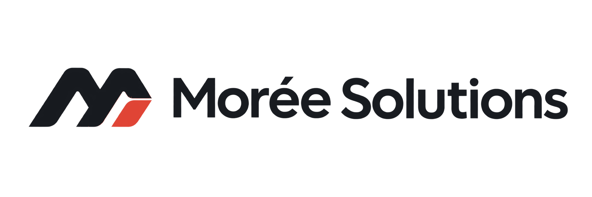

Reduce manual workload
Move repetitive, rule-based work away from your team.

Intelligent automation for business
Why businesses automate
Give your team more room for customers, decisions and growth while routine work moves consistently in the background.
Move repetitive, rule-based work away from your team.
Apply the same validation and business rules every time.
Keep recurring work moving without unnecessary waiting.
Create capacity without adding more repetitive effort.
What we automate
Move information between spreadsheets, emails, web portals and business systems—with validation built in.
Run recurring workflows on time, consolidate results and track exceptions without manual chasing.
Generate reports, organise files and prepare consistent notifications, summaries and attachments.
Classify, extract, summarise and route unstructured information using approved knowledge and controls.
A controlled path to automation
We translate your real workflow into a maintainable solution—with scope, testing and exceptions understood before launch.
Map the workflow, pain points, systems and business goals.
Confirm scope, rules, permissions and exception handling.
Develop the workflow and test success, failure and edge cases.
Provide guidance, handover and agreed initial support.
Intelligent operations orchestration
AI can understand incoming emails and documents, while automation applies your rules and coordinates the work across people and systems.
Who we are
Morée Solutions helps businesses improve operational efficiency, reduce costs and enhance productivity through RPA and innovative AI solutions.
We focus on practical outcomes: streamlined workflows, fewer repetitive tasks and resources used where they create the most value.
Free consultation
Share one workflow or business goal. We’ll identify a practical AI or automation approach to reduce cost and improve efficiency.
No obligation. Start with one workflow.